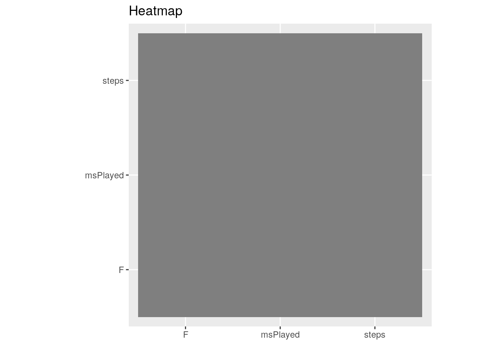
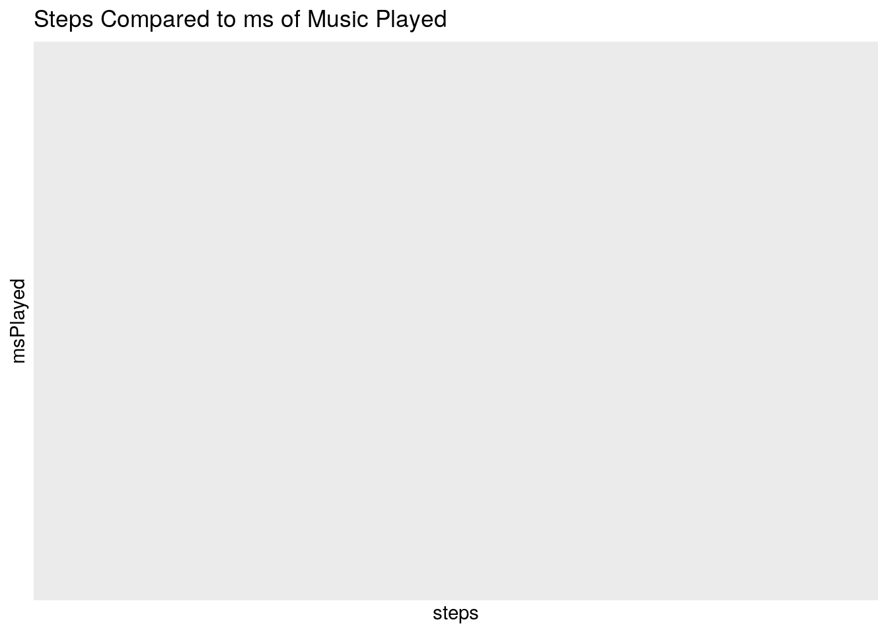
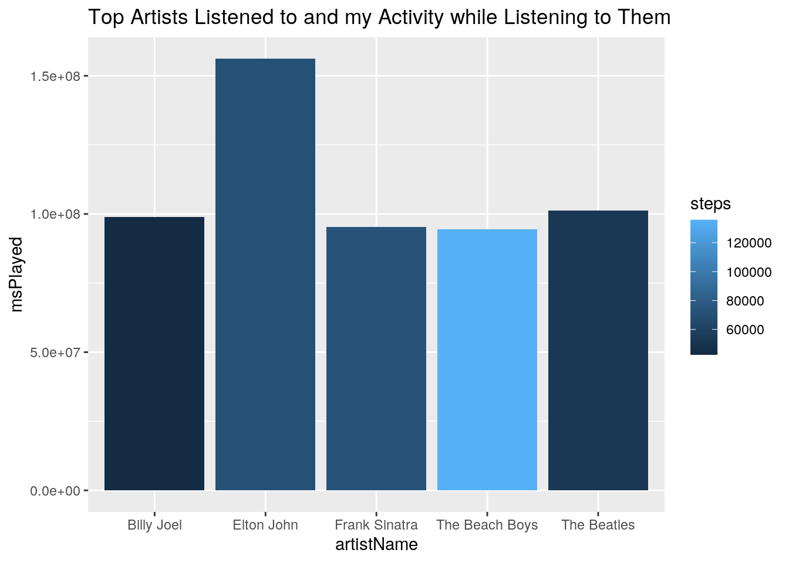

For this project, I will be comparing three datasets. The first is data from my spotify account. This dataset consists of the date and time, artist name, track name, and ms played for each song. The next dataset is from my health app. This dataset also has date and time, and the amount of steps I took at each time. These two will be joined together with date. Because the songs and steps all occur at different times during the day, I made a dataset with the total steps for a day and total ms of music played for a day. Then I joined that with a dataset of the average weather each day in Port Aransas, Texas, where I was living at the time of this data being collected. I wanted to see if temperature had anything to do with the amount of steps I take or how much music I listen to. I did not know what to expect.
library(tidyverse)
library(ggplot2)
# importing health app data
health <- read_csv("proj1heal.csv")
# importing spotify app data
spotify <- read_csv("proj1spot.csv")
# importing weather (will join later)
weather <- read_csv("proj1weather.csv")I will be doing a inner join so that my resulting data consists of only dates that overlap between the two data sets. My first health app dataset originally had 51,293 rows. My second spotify dataset originally had 1,411 rows. When joined, the resultant data set has 34,399 rows. There are less rows because I do not listen to spotify every day, but I do at least take one step a day.
# Need to make date into a separate column from time for both
health <- health %>% separate(enddate, into = c("date", "time"),
sep = " ", convert = T) %>% rename(steps = value)
spotify <- spotify %>% separate(endTime, into = c("date", "time"),
sep = " ", convert = T)
# I join my spotify data with my health app data!
joined1 <- inner_join(health, spotify, by = "date")First I will use all six core dplyr functions, and then I will create summary statistics for each numeric variable.
# sort out all the songs and dates I listened to Jimmy
# Buffett (My favorite)
joined1 %>% filter(artistName == "Jimmy Buffett")## # A tibble: 1,092 x 7
## date time.x steps time.y artistName trackName msPlayed
## <chr> <chr> <dbl> <chr> <chr> <chr> <dbl>
## 1 4/5/20 10:23 26 21:09 Jimmy Buffe… Cheeseburger In Paradise 171600
## 2 4/5/20 10:23 26 21:12 Jimmy Buffe… Changes In Latitudes, Chang… 194466
## 3 4/5/20 10:23 26 21:14 Jimmy Buffe… Pencil Thin Mustache 0
## 4 4/5/20 10:23 26 21:14 Jimmy Buffe… A Pirate Looks At Forty 452
## 5 4/5/20 10:23 26 21:14 Jimmy Buffe… He Went To Paris 696
## 6 4/5/20 10:23 26 21:14 Jimmy Buffe… Margaritaville 1149
## 7 4/5/20 10:23 26 21:14 Jimmy Buffe… Come Monday 0
## 8 4/5/20 10:23 26 21:14 Jimmy Buffe… Grapefruit - Juicy Fruit 801
## 9 4/5/20 10:23 26 21:14 Jimmy Buffe… Boat Drinks 0
## 10 4/5/20 10:23 26 21:14 Jimmy Buffe… Why Don't We Get Drunk 1010
## # … with 1,082 more rows# selected columns that contain a '.'
joined1 %>% select(contains("."))## # A tibble: 34,339 x 2
## time.x time.y
## <chr> <chr>
## 1 8:29 18:15
## 2 9:53 18:15
## 3 10:27 18:15
## 4 12:06 18:15
## 5 13:10 18:15
## 6 15:10 18:15
## 7 15:57 18:15
## 8 16:35 18:15
## 9 18:51 18:15
## 10 19:35 18:15
## # … with 34,329 more rows# arranged the data by which time I took the most steps fun
# fact, 4/23/20 was my 21st birthday. As you can see I
# listened to a lot of Pitbull
joined1 %>% arrange(desc(steps))## # A tibble: 34,339 x 7
## date time.x steps time.y artistName trackName msPlayed
## <chr> <chr> <dbl> <chr> <chr> <chr> <dbl>
## 1 4/23/20 12:29 1032 16:15 Pitbull Fireball (feat. John Ryan) 191701
## 2 4/23/20 12:29 1032 16:17 Pitbull Go Girl 11946
## 3 4/23/20 12:29 1032 16:17 DJ Snake Taki Taki (with Selena Gome… 1408
## 4 4/23/20 12:29 1032 16:17 Pitbull Fireball (feat. John Ryan) 43584
## 5 4/23/20 12:29 1032 16:17 Jason Deru… It Girl 63
## 6 4/23/20 12:29 1032 16:17 B.o.B Nothin' on You (feat. Bruno… 874
## 7 4/23/20 12:29 1032 16:18 Pitbull Dame Tu Cosita - Radio Vers… 44480
## 8 4/23/20 12:29 1032 16:18 Nelly Hot In Herre 725
## 9 4/23/20 12:29 1032 16:18 Olly Murs Troublemaker (feat. Flo Rid… 5312
## 10 4/23/20 12:29 1032 16:19 Major Lazer Trigger 725
## # … with 34,329 more rows# group data by artist
joined1 %>% group_by(artistName)## # A tibble: 34,339 x 7
## # Groups: artistName [545]
## date time.x steps time.y artistName trackName msPlayed
## <chr> <chr> <dbl> <chr> <chr> <chr> <dbl>
## 1 12/25/… 8:29 13 18:15 Adolphe Ad… O Helga natt (Cantique de N… 114273
## 2 12/25/… 9:53 18 18:15 Adolphe Ad… O Helga natt (Cantique de N… 114273
## 3 12/25/… 10:27 12 18:15 Adolphe Ad… O Helga natt (Cantique de N… 114273
## 4 12/25/… 12:06 38 18:15 Adolphe Ad… O Helga natt (Cantique de N… 114273
## 5 12/25/… 13:10 16 18:15 Adolphe Ad… O Helga natt (Cantique de N… 114273
## 6 12/25/… 15:10 10 18:15 Adolphe Ad… O Helga natt (Cantique de N… 114273
## 7 12/25/… 15:57 121 18:15 Adolphe Ad… O Helga natt (Cantique de N… 114273
## 8 12/25/… 16:35 75 18:15 Adolphe Ad… O Helga natt (Cantique de N… 114273
## 9 12/25/… 18:51 5 18:15 Adolphe Ad… O Helga natt (Cantique de N… 114273
## 10 12/25/… 19:35 8 18:15 Adolphe Ad… O Helga natt (Cantique de N… 114273
## # … with 34,329 more rows# created a new column converting milliseconds to minutes
joined1 %>% mutate(minsPlayed = msPlayed/60000)## # A tibble: 34,339 x 8
## date time.x steps time.y artistName trackName msPlayed minsPlayed
## <chr> <chr> <dbl> <chr> <chr> <chr> <dbl> <dbl>
## 1 12/25… 8:29 13 18:15 Adolphe Ad… O Helga natt (Can… 114273 1.90
## 2 12/25… 9:53 18 18:15 Adolphe Ad… O Helga natt (Can… 114273 1.90
## 3 12/25… 10:27 12 18:15 Adolphe Ad… O Helga natt (Can… 114273 1.90
## 4 12/25… 12:06 38 18:15 Adolphe Ad… O Helga natt (Can… 114273 1.90
## 5 12/25… 13:10 16 18:15 Adolphe Ad… O Helga natt (Can… 114273 1.90
## 6 12/25… 15:10 10 18:15 Adolphe Ad… O Helga natt (Can… 114273 1.90
## 7 12/25… 15:57 121 18:15 Adolphe Ad… O Helga natt (Can… 114273 1.90
## 8 12/25… 16:35 75 18:15 Adolphe Ad… O Helga natt (Can… 114273 1.90
## 9 12/25… 18:51 5 18:15 Adolphe Ad… O Helga natt (Can… 114273 1.90
## 10 12/25… 19:35 8 18:15 Adolphe Ad… O Helga natt (Can… 114273 1.90
## # … with 34,329 more rows# used summarise to sum up all the steps taken within a
# single date
joined1 %>% group_by(date) %>% summarise(sum = sum(steps))## # A tibble: 38 x 2
## date sum
## <chr> <dbl>
## 1 12/25/19 346
## 2 3/25/20 40188
## 3 3/26/20 95410
## 4 3/27/20 45855
## 5 3/29/20 80592
## 6 3/31/20 56430
## 7 4/10/20 100940
## 8 4/11/20 206424
## 9 4/12/20 146688
## 10 4/13/20 80316
## # … with 28 more rowsUsing the function filter we can see all the times I listened to Jimmy Buffett, which is a lot. Select can be used to select columns that have a ‘.’ in them, and arrange can be used to arrange data by descending steps , as you can see I was most active when listening to Pitbull and other artists on my birthday , 4/23. Group_by is used to group the data by a certain variable, in this case artist. Mutate was used to convert ms played to minutes played. Lastly, group_by and summarise were used to group by date and add all the steps taken that day to see the total steps I took each day.
# overall
joined1 %>% summarise_if(is.numeric, mean, na.rm = TRUE)## # A tibble: 1 x 2
## steps msPlayed
## <dbl> <dbl>
## 1 93.7 137419.joined1 %>% summarise_if(is.numeric, sd, na.rm = TRUE)## # A tibble: 1 x 2
## steps msPlayed
## <dbl> <dbl>
## 1 141. 101498.joined1 %>% summarise_if(is.numeric, var, na.rm = TRUE)## # A tibble: 1 x 2
## steps msPlayed
## <dbl> <dbl>
## 1 19868. 10301743351.joined1 %>% summarise_if(is.numeric, quantile, na.rm = TRUE)## # A tibble: 5 x 2
## steps msPlayed
## <dbl> <dbl>
## 1 1 0
## 2 8 8614
## 3 21 172840
## 4 113 216014
## 5 1032 516893joined1 %>% summarise_if(is.numeric, min, na.rm = TRUE)## # A tibble: 1 x 2
## steps msPlayed
## <dbl> <dbl>
## 1 1 0joined1 %>% summarise_if(is.numeric, max, na.rm = TRUE)## # A tibble: 1 x 2
## steps msPlayed
## <dbl> <dbl>
## 1 1032 516893joined1 %>% summarise_if(is.numeric, n_distinct, na.rm = TRUE)## # A tibble: 1 x 2
## steps msPlayed
## <int> <int>
## 1 318 1092# when grouped by categorical variable
joined1 %>% group_by(date) %>% summarise_if(is.numeric, mean,
na.rm = TRUE)## # A tibble: 38 x 3
## date steps msPlayed
## <chr> <dbl> <dbl>
## 1 12/25/19 31.5 114273
## 2 3/25/20 72.0 204795.
## 3 3/26/20 71.5 140068.
## 4 3/27/20 122. 123927.
## 5 3/29/20 68.7 75503.
## 6 3/31/20 273. 77634.
## 7 4/10/20 137. 145173.
## 8 4/11/20 191. 130682.
## 9 4/12/20 133. 85816.
## 10 4/13/20 178. 107559.
## # … with 28 more rowsjoined1 %>% group_by(date) %>% summarise_if(is.numeric, sd, na.rm = TRUE)## # A tibble: 38 x 3
## date steps msPlayed
## <chr> <dbl> <dbl>
## 1 12/25/19 35.8 0
## 2 3/25/20 176. 125528.
## 3 3/26/20 74.4 98818.
## 4 3/27/20 170. 121620.
## 5 3/29/20 111. 97667.
## 6 3/31/20 300. 103061.
## 7 4/10/20 156. 93742.
## 8 4/11/20 181. 109906.
## 9 4/12/20 182. 102150.
## 10 4/13/20 140. 107173.
## # … with 28 more rowsjoined1 %>% group_by(date) %>% summarise_if(is.numeric, var,
na.rm = TRUE)## # A tibble: 38 x 3
## date steps msPlayed
## <chr> <dbl> <dbl>
## 1 12/25/19 1281. 0
## 2 3/25/20 30898. 15757319306.
## 3 3/26/20 5540. 9764936887.
## 4 3/27/20 28804. 14791544180.
## 5 3/29/20 12385. 9538883385.
## 6 3/31/20 90240. 10621600664.
## 7 4/10/20 24349. 8787604884.
## 8 4/11/20 32672. 12079282295.
## 9 4/12/20 33133. 10434678130.
## 10 4/13/20 19597. 11486123705.
## # … with 28 more rowsjoined1 %>% group_by(date) %>% summarise_if(is.numeric, quantile,
na.rm = TRUE)## # A tibble: 190 x 3
## # Groups: date [38]
## date steps msPlayed
## <chr> <dbl> <dbl>
## 1 12/25/19 5 114273
## 2 12/25/19 11 114273
## 3 12/25/19 16 114273
## 4 12/25/19 34 114273
## 5 12/25/19 121 114273
## 6 3/25/20 1 23894
## 7 3/25/20 5 125666
## 8 3/25/20 8 185973
## 9 3/25/20 35 281613
## 10 3/25/20 992 425653
## # … with 180 more rowsjoined1 %>% group_by(artistName) %>% summarise_if(is.numeric,
min, na.rm = TRUE)## # A tibble: 545 x 3
## artistName steps msPlayed
## <chr> <dbl> <dbl>
## 1 2CELLOS 1 192840
## 2 311 2 206973
## 3 5 Seconds of Summer 10 37898
## 4 A Great Big World 4 218133
## 5 ABBA 1 267
## 6 Adolphe Adam 5 114273
## 7 Afroman 6 1898
## 8 AJR 3 212783
## 9 Alain Souchon 3 16810
## 10 Alan Jackson 2 230266
## # … with 535 more rowsjoined1 %>% group_by(artistName) %>% summarise_if(is.numeric,
max, na.rm = TRUE)## # A tibble: 545 x 3
## artistName steps msPlayed
## <chr> <dbl> <dbl>
## 1 2CELLOS 445 192840
## 2 311 555 206973
## 3 5 Seconds of Summer 541 37898
## 4 A Great Big World 390 229320
## 5 ABBA 445 251786
## 6 Adolphe Adam 121 114273
## 7 Afroman 617 1898
## 8 AJR 590 212783
## 9 Alain Souchon 590 16810
## 10 Alan Jackson 667 230266
## # … with 535 more rowsjoined1 %>% group_by(artistName, trackName) %>% summarise_if(is.numeric,
n_distinct, na.rm = TRUE)## # A tibble: 930 x 4
## # Groups: artistName [545]
## artistName trackName steps msPlayed
## <chr> <chr> <int> <int>
## 1 2CELLOS Moon River 17 1
## 2 311 Amber 25 1
## 3 5 Seconds of Summer Wildflower 17 1
## 4 A Great Big World Kaleidoscope 24 1
## 5 A Great Big World You 15 1
## 6 ABBA Dancing Queen 20 1
## 7 ABBA Mamma Mia 17 1
## 8 ABBA Money, Money, Money 17 1
## 9 ABBA SOS 11 1
## 10 ABBA Super Trouper 28 2
## # … with 920 more rowsIn the data summarized above, you can see that the mean steps I take (approx each hour)is 93.65, and the average ms I listen to a song is 137418.9 (around 2 minutes). The standard deviation is pretty high for both, and the minimum amount of steps is 1 while the minimum ms played is 0. The maximum steps taken is 1032, and the maximum time listened to a song is 516,893ms. When grouped by date, you can see the day I stepped the most average steps was 3/31/20, and most time listening to music was 4/30/20.
Using the a data set ‘tidy’ I created, I will show the pivot functions.
# making the dataset
tidy <- joined1 %>% group_by(date) %>% summarise(mean(steps))
# First I will make month variables:
tidy <- tidy %>% separate(date, into = c("month", "day/year"),
convert = T)
# Now I use pivot_wider to sort by month
untidy <- tidy %>% pivot_wider(names_from = "month", values_from = "mean(steps)")
# Now I will put everything back in place using pivot_longer
tidy <- untidy %>% pivot_longer(c("12", "3", "4", "5"), names_to = "month",
values_to = "mean(steps)") %>% drop_na()I used the sum of steps and ms played per day to create a new dataset that I joined with weather data for each date I had data for. Because my data is sorted by time as well as date, I want to get rid of the time variable. This way I can look at total steps taken, total ms of music listened to, and the temperature each day. I did not do this earlier because I wanted to see information about the amount of songs/artists I listen to in the previous summary statistics.
summed <- joined1 %>% group_by(date) %>% summarise_if(is.numeric,
sum, na.rm = TRUE)
# then I'll join in the weather data for interesting graphs
data <- inner_join(weather, summed, by = "date")# first a correlation heatmap:
data %>% select_if(is.numeric) %>% cor %>% as.data.frame %>%
rownames_to_column %>% pivot_longer(-1) %>% ggplot(aes(rowname,
name, fill = value)) + geom_tile() + geom_text(aes(label = round(value,
2))) + xlab("") + ylab("") + coord_fixed() + scale_fill_gradient2(low = "purple",
mid = "white", high = "pink") + ggtitle("Heatmap") In this heatmap you can see that there is a high positive correlation between steps and msPlayed. This indicated that on days when I listen to more music, I am more likely to take more steps. On the other hand, there is a negative correlation between ms played and temperature (Fº), which indicates that I listen to more music when the tempertaure is cooler. There is a nonexistant correlation between steps I take and temperature, this is interesting as it indicates that I do the same amount of activity regardless of the weather.
# A scatterplot to show the relationship between steps and
# msPlayed, which had the highest correlation according to
# the heat map
ggplot(data, aes(steps, msPlayed, color = F)) + geom_point(size = 3) +
scale_x_log10(labels = scales::number) + scale_y_log10(labels = scales::number) +
scale_color_gradient(low = "yellow", high = "red") + ggtitle("Steps Compared to ms of Music Played") In this graph you can see that the more steps I take, the more music I listened to. The weather varies. I changed the scale of the tick marks on the the x and y axis in this graph to remove the empty space that was originally in the top portion of the graph. In addition, I changed the data labels to not be in scientific notation.
# making a bar graph that compares my top artists by how
# often I listen to them, and how active I am while listening
# to them.
joined1 %>% group_by(artistName) %>% summarise_if(is.numeric,
sum, na.rm = TRUE) %>% arrange(desc(msPlayed)) %>% slice(1:5) %>%
ggplot(., aes(x = artistName, y = msPlayed, fill = steps)) +
geom_bar(stat = "summary", position = "dodge") + ggtitle("Top Artists Listened to and my Activity while Listening to Them") Here we can see which artists I listen to the most. I seem to be very active when listening to the Beach Boys, and not very active when listening to Billy Joel. I share my spotify with my mom which is why the the Beatles and Elton John are very high, although I do enjoy Elton John which is why he is my top artist. I was living in Port Aransas, Texas this semester and so I listended to lots of Beach Boys when at the beach, which accounts for all the steps as I would walk to the beach! I would listen to Billy Joel with my lab partner, which is why there are less steps because lab days I was less active. We were huge Billy Joel fans and planned on going to a concert, but then Covid hit :( .
# determine best number of clusters, which is 2
# library(cluster) pam_dat<-data%>%select(steps, msPlayed, F)
# sil_width<-vector() for(i in 2:10){ pam_fit <- pam(pam_dat,
# k = i) sil_width[i] <- pam_fit$silinfo$avg.width }
# ggplot()+geom_line(aes(x=1:10,y=sil_width))+scale_x_continuous(name='k',breaks=1:10)
# run PAM pam2<-data%>%pam(2) pam2
# visualize
# pamclust<-data%>%mutate(cluster=as.factor(pam2$clustering))
# pamclust%>%ggplot(aes(steps,msPlayed,color=cluster))+geom_point()+ggtitle('Cluster')
# plot(pam2,which=2)The clustering done above shows how the data is spread between all the variables. The cluster was done to see if data falls into groups where they are distinct from other groups of data, and to sense regularity. First I determined the best number of clusters to make using silhouette width, which accounts for both similarity within groups and difference from other groups. The ideal number of clusters was found to be 2. Then, I used pam, a function in R, to cluster the data. In this visualization, you can see that while most data points fall on the lower level of ms played per day, some days I listened to a lot of music, forming another cluster. Looking at the silhouette plot of the data, there is a high silhouette width, which suggests a strong structure.